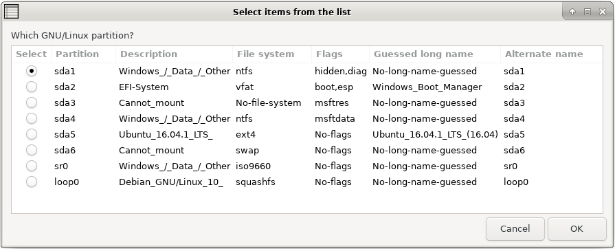

Choose your language.
Easy GNU/Linux Boot Fix - Rescapp - Documentation
Either if you have an old system based on MBR boot or a new one based on UEFI boot you might find that a Windows reinstallation hides your GNU/Linux distribution.
You are not longer able to boot into your GNU/Linux distribution because the Grub menu is no longer there.
This option makes many tasks so that your Grub menu appears again. That's why it's an easy option.
It fixes the partition filesystem inconsistency, updates your GRUB configuration files and then reinstalls your GNU/Linux distribution grub either into your MBR again or into your UEFI boot entry list again so that your Grub menu appears again.
-
Step 1Rescapp searches for partitions on your system.
-
Step 2If such partitions have been found, Rescapp displays them. At the same time you are prompted:
Which GNU/Linux partition? You are supposed to choose, your main GNU/Linux distribution and press the OK button.

-
Step 3Rescapp searches for hard disks present, on your system.
-
Step 4You are prompted:Which hard drive do you wish to install Grub on? You are supposed to, take a look at the hard drive sizes, (to be able to identify your hard drives) and choose (usually) the one, that is set to be the first one, to boot in your BIOS or UEFI settings.

-
Step 5(NOTE: This step is automatically skipped if your system only has one hard disk.) You are prompted:Order hard drives, according to boot order. Press OK to continue.. Take a look at the hard drives and their sizes. Order them according, to the BIOS boot order and then press OK.

-
Step 6Rescapp with all the gathered information, is going to filesystem check your Linux partition.
-
Step 7You are informed about the (forced) file system check process.You either get:
 [SUCCESS] Filesystem check with automatic fix was OK! :)
[SUCCESS] Filesystem check with automatic fix was OK! :)
or
 [ERROR] Filesystem check with automatic fix failed! :(
[ERROR] Filesystem check with automatic fix failed! :(
-
Step 8Rescapp with all the gathered information, is going to create a temporary device.map, on your Linux installation, (which will be deleted later), and try to update your grub configuration file, on your selected hard drive, thanks to your own distributions update-grub command.
-
Step 9You are informed about the grub configuration update process.You either get:
[SUCCESS] Grub configuration was updated OK! :)
or
[ERROR] Grub configuration update went wrong! :(
-
Step 10Rescapp with all the gathered information, is going to create a temporary device.map on your Linux installation, (which will be deleted later) and try to install grub on your selected hard drive, thanks to your own distribution's grub-install command.
-
Step 11You are informed about the grub install process.You either get:
[SUCCESS] Grub was installed OK! :)
or
[ERROR] Grub was not installed. Something went wrong! :(
-
Step 12You are informed about the overall process.You either get:
[SUCCESS] Easy GNU/Linux Boot Fix (Fsck partition, update grub menues, restore GRUB on the MBR and order UEFI entries) was OK! :)
or
[ERROR] Easy GNU/Linux Boot Fix (Fsck partition, update grub menues, restore GRUB on the MBR and order UEFI entries) was not fully completed. Something went wrong! :(